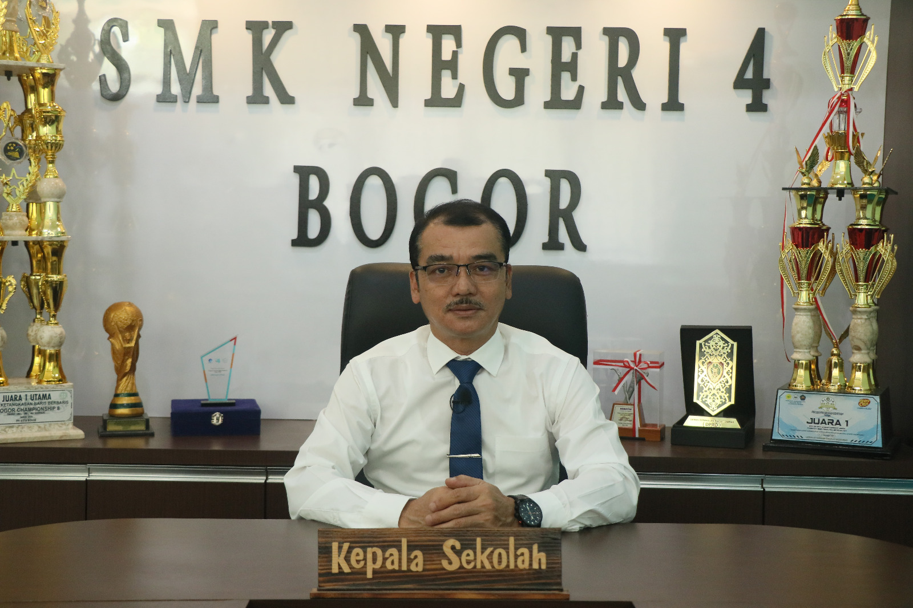

Merupakan sekolah kejuruan berbasis Teknologi Informasi dan Komunikasi. Sekolah ini didirikan dan dirintis pada tahun 2008 kemudian dibuka pada tahun 2009 yang saat ini terakreditasi A. Terletak di Jalan Raya Tajur Kp. Buntar, Muarasari, Bogor, sekolah ini berdiri di atas lahan seluas 12.724 m2 dengan berbagai fasilitas pendukung di dalamnya. Terdapat 54 staff pengajar dan 22 orang staff tata usaha, dikepalai oleh Drs. Mulya Mulprihartono, M. Si, sekolah ini merupakan investasi pendidikan yang tepat untuk putra/putri anda.
Drs. Mulya Murprihartono, M.Si. Kepala Sekolah Ke-3, Juli 2020 - sekarang Sejak satu tahun lalu SMKN 4 Kota Bogor dipimpin oleh seseorang yang membawa warna baru, tahun pertama sejak dilantik, tepatnya pada tanggal 10 Juli 2020, inovasi dan kebijakan-kebijakan baru pun mulai dirancang. Bukan tanpa kesulitan, penuh tantangan tapi beliau meyakinkan untuk selalu optimis pada harapan dengan bersinergi mewujudkan visi misi SMKN 4 Bogor ditengah kesulitan pandemi ini. Strategi baru pun dimunculkan, beberapa program sudah terealisasikan diantaranya mengembangkan aplikasi LMS (Learning Management System) sebagai solusi dalam pelaksanaan program BDR (Belajar dari Rumah), untuk mengoptimalkan hubungan kerjasama antara sekolah dengan Industri dan Dunia Kerja (IDUKA), dan juga untuk pengalaman praktek belajar jarak jauh agar tetap berjalan dengan optimal.